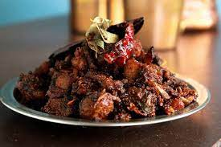

Velyne's fried pork

Look at that yummy yum porky pork!
Here's the ingredients you'll need!
- Pork (of course)!
- Onion
- Tomatos
- Garlic
- Ginger
- Salt (and lots of it)!
Here's how we do it!
- First, cut some of the yummy fat off the top and fry it
until the fat comes out.
- Next, cook the onion in the fat on medium heat
- Now add the ginger and garlic and let it sizzle for a min
- Add the tomato next and let it turn to mush-mush
- Finally, add the qubed pork and let that baby cook
- Super finally, eat!